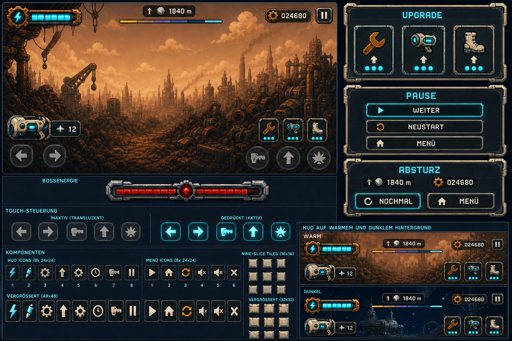
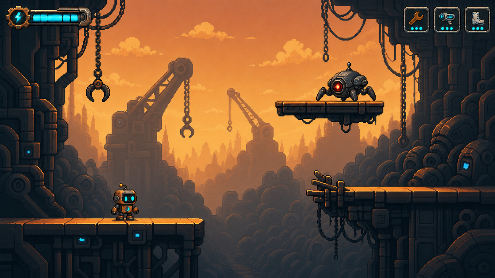
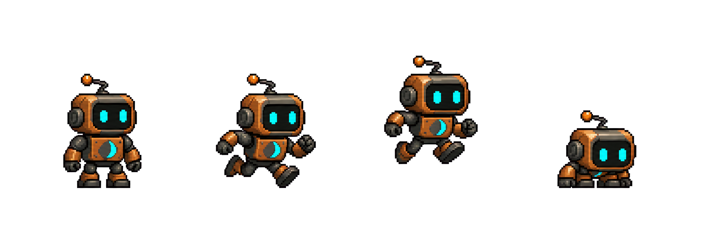
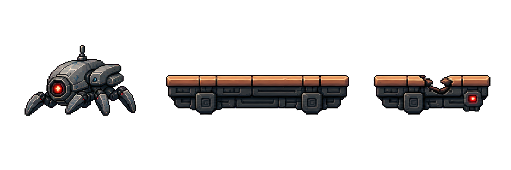
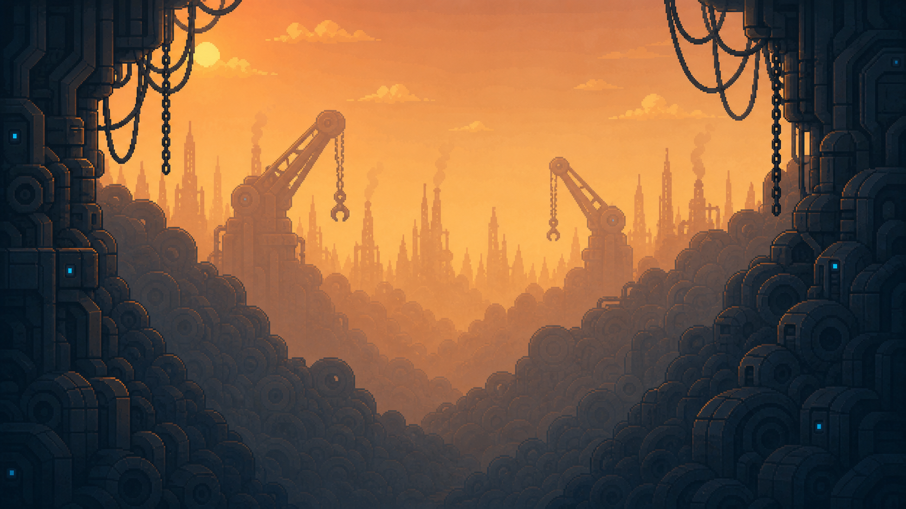

01
Direkter Vergleich
Gleiche Welt, aber mit ruhigeren Flächen und klareren Ebenen.


02
Produktionsmuster
Figuren und Bauteile besitzen bereits transparente Hintergründe, sind aber bewusst noch keine vollständigen Spritesheets.


03
Hintergrund ohne Spielfeld
Die Landschaft erzählt weiterhin vom Schrottplatz, lässt in der Mitte aber Platz für Sprünge, Gegner und Plattformen.

04
Verbindliche Regeln
Diese fünf Regeln halten alle späteren Assets zusammen.
- Große ruhige Farbflächen statt zufälliger Kratzer.
- Helle, durchgehende Oberkanten markieren sichere Plattformen.
- Figuren haben den höchsten Kontrast der Szene.
- Entfernte Landschaften sind heller und farbärmer.
- Alle Objekte werden von links oben beleuchtet.